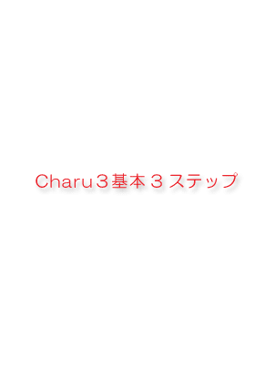

Charu3
and Charu2Pro are very alike. It can use by the almost same operation. If
Charu2Pro has been used, it will be possible to use Charu3 satisfactory.
1.You Edit a text file or brows web page.
Push an ALT+X(It's Hotkey. You can change the setting).
2."Charu3" popups on the Editbox.
3.Please choose an item, and push an Enterkey.
Pasted the selected item.
These three steps are foundations.
There is also a function to bundle with the tag of HTML the text selected as others by the editor, or to process with plugin and to change a character code. It gets used to attachment of a fixed form sentence, and if it enables it to master many functions next, I will think that it is good.
Charu3 carries various functions, in order to perform text input quickly comfortably anyhow. Text input will become quite easy if all can be mastered. Please read a document by all means to be able to master.
Please get used to operation of the first step of changing a setup of appearance which customizes for itself the fixed form sentence which sticks a fixed form sentence at first.Although Charu3 has various functions, since it is not noticed, it may not be used.
The main functions were written. Moreover, since input support software had many kinds, it was made to become the index of which software to use.
Although it is incidentally the meaning of a sign, even if "Excellent!"
compares with the software of the same genre, although the function and "Good"
included in the more excellent one have the function itself, restriction is
also a certain function.
|
Function
|
Level
|
Memo
|
| User management | mulch | It is managed by the user name of Windows. A setup and an ini file become according to a user. |
| The call method | many | How to call plurality is prepared, such as touching the corner of a hot key (a key double click OK), a tray icon click, and a desktop Courner touch by cursor. |
| setting file | .ini | It is managed by the folder for every user. A registry does not use. |
| Data file | Binary | It is saved by the binary file of Charu3 format.* When using data compatible plug-in, the data file of a text file can also be treated. |
| Max data | Infinity | Since it will become heavy if data naturally increases in number even if it says that it is infinite, it is like a degree. Restriction is the talk that there is nothing, to the last. |
| Window type | Tree | Charu3 has adopted tree control of a dialog as pop-up. Although many software is menu systems, the tree is used by facilities with one petty in design. |
| Unicode | Excellent! |
Although it is only for WindowsNT systems, there is also the Unicode correspondence version. The input support software also corresponding to the display is only Charu3. It operates by WindowsNT2000 and XP. |
| Paste accuracy | Excellent! | It can set up finely so that a text can be correctly stuck on many software. |
| Compatibility with data | Excellent! | If data compatible plug-in is used, text files, such as HotClip form, can also be read. A text file group is also safe. |
| History | Excellent! | It will become a history folder if the check for histories is put into a folder. It is possible to make more than one. |
| Class History | Good | A class setup can be performed to a history folder only by writing in the extended macro of one line. A class is to one class. |
| Edit a items | Excellent! | It can edit, if registration data is chosen and a property is called. Since data is broken by easy operation, it does not become precocious. |
| Folder | Excellent! | Since registration data is manageable by the folder, arrangement is easy to carry out it. |
| Drag & Drop | Excellent! | Data can be rearranged by drag & drop. |
| Macro | Excellent! | By writing an easy macro, many things, such as the date, processing of a day of the week and a selection text, and a call of plugin, are made. |
| Key emulate | Excellent! | By using an easy key input macro, a keyboard input can be performed in the middle of text attachment. If this is used, attestation of a WEBBU site etc. is automatable. Furthermore, it is possible to also make a key push before and after attachment. |
| Launcher | Good | By writing an easy macro lungage, it can also use as a launcher. |
| Text processing | Excellent! | This is also realizable by writing an easy macro. Please make the attached data for HTML reference. |
| Plugin | Good | It is macro and plug-in of DLL form can be called. Various functions, such as text conversion and information acquisition, can be added. |
| Self diagnosis | Excellent! | Restoration of a clip board chain and restoration of a task tray icon are performed. It is the function which restores the influence from other software personally. |
| It can paste two or more. | Excellent! | The function to stick two or more registration data at once is carried. |
| Direct paste | Excellent! | A hot key is assigned to the registration data itself using an extended macro, and even if it does not call tree one, a fixed form sentence can be stuck. |
| Direct Copy | Excellent! | When a direct copy key is assigned to data, a text is selected by the editor etc. and a key is pushed, it is the function in which a selection text goes into data. It can use by touch which the clip board of exclusive use has to the assigned key. It is still more convenient if you use combining a HotKey extension macro. Moreover, if a direct copy key is assigned to a folder, usage like the history folder only containing arbitrary data will become possible. |
| Auto key setting | Excellent! | From the window title for attachment, it is automatic and a key setup at the time of attachment can be set up. It can respond also to slightly tricky software, such as xyzzy. |
| Import & Export | Excellent! | There are a function which imports other software and the data of Charu3, and a function which exports some its own data in Charu3 form. |
| Stuck mode | Excellent! | The contents of a clip board are saved up and there is a function which it sticks one [ at a time ] by pushing Ctrl+V. It is the function which changes a clip board into a FIFO state. |
| Quick operations | Excellent! | If the quick accessing function adapting the increment search is used, it can jump in an instant to the target data. Moreover, from there, it is automatic and there is also a function of the quick decision which sticks. |